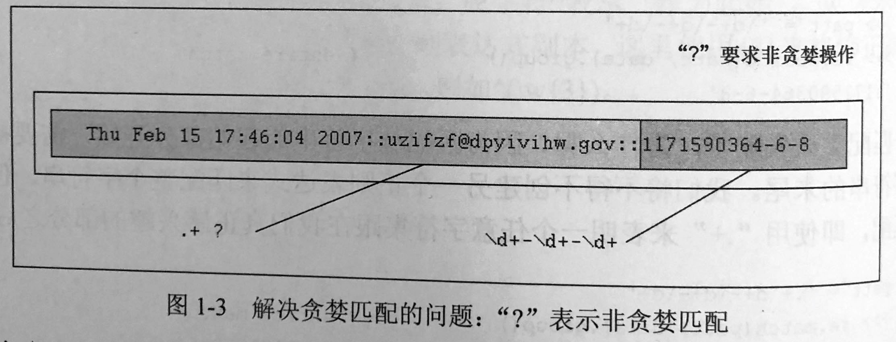
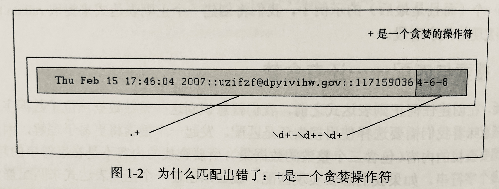

第1章 正则表达式
1.1 简介/动机
操作文本或者数据可是件大事。如果不相信，就仔细看看如今的计算机在做些什么工作：文字处理、网页表单的填写、来自数据库转储信息流、股票报价信息、新闻源，而且这个清单还会不断增长。因为我们可能还不知道需要用计算机编程来处理的文本或数据的具体内容，所以能将这些文本或者数据以某种可被计算机识别和处理模式表达出来是非常有用的。
如何通过编程使计算机具有在文本中检索某种模式的能力。正则表达式为高级的文本模式匹配、抽取、与/或文本形式的搜索和替换功能提供了基础。简单地说，正则表达式（简称regex）是一些由字符和特殊符号组成的字符串。它们描述了模式的重复或者表述多个字符，于是正则表达式能按照某种模式匹配一系列有相似特征的字符串。换句话来说，它们能够匹配多个字符串。
Python通过标准库中的re模块来支持正则表达式。本节将做一个简短扼要的介绍。
你的第一个正则表达式
前面讲到，正则表达式是包含文本和特殊字符的字符串，该字符串描述一个可以识别种种字符串的模式。现在，让我们看看正则表达式的大部分基本内容，虽然正则表达式通常被视为“高级主题”，但是它们其实也非常简单。把标准字母表用于通用文本，我们展示了一些简单的正则表达式能及这些模式所表述的字符串。下面所介绍的正则表达式都是最基本、最普通的。它们仅仅用一个简单的字符串构造成一个匹配字符串的模式：该字符串由正则表达式定义。下面所示为几个正则表达式和它们所匹配的字符串。
| 正则表达式模式 | 匹配字符串 |
|---|---|
| $foo$ | $foo$ |
| $Python$ | $Python$ |
| $abc123$ | $abc123$ |
上面的第一个正则表达式模式是“foo”。该模式没有使用任何特殊符号去匹配其他符号，而只匹配所描述的内容，所以，能够匹配这个模式的只有包含“foo”的字符串。同理，对于字符串”Python”和“abc123”也一样。正则表达式的强大之处在于引入特殊字符来定义字行集、匹配子组和重复模式。正是由于这些特殊符号，使得正则表达式可以匹配字符串集合，而不仅仅只是某个单个字符串。
1.2 特殊符号和字符
本节将介绍最常见的特殊符号和字符，即所谓的元字符，正是它给予正则表达式强大的功能和灵活性。表1-1列出了这些最常见的符号和字符。
| 表 示 法 | 描 述 | 正则有达式示例 |
|---|---|---|
| 符号 | ||
| $literal$ | 匹配文本字符串的字面值literal | $foo$ |
| $re1 | re2$ | 匹配正则表达式re1或者re2 | $foo | bar$ |
| $.$ | 匹配任何字符（除了\n之外） | $b.b$ |
| ^ | 匹配字符串起始部分 | ^$Dear$ |
| $ | 匹配字符串终止部分 | /$bin/*sh$$ |
| * | 匹配0次或者多次前面出现的正则表达式 | [A-Za-z0-9]* |
| + | 匹配1次或者多次前面出现的正则表达式 | [a-z]+.com |
| ? | 匹配0次或者1次前面出现的正则表达式 | goo? |
| {N} | 匹配N次前面出现的正则表达式 | [0-9]{3} |
| {M,N} | 匹配M~N次前面出现的正则表达式 | [0-9]{5,9} |
| […] | 匹配来自字符集的任意单一字符 | [aeiou] |
| […x-y..] | 匹配x~y范围中的任意单一字符 | [0-9] , [A-Za-z] |
| [^…] | 不匹配此字符集中出现的任何一个字符，包括某一范围的字符（如果在此字符集中出现） | [^aeiou] , [^A-Za-z0-9] |
| (* | + | ? |{})? | 用于匹配上面频繁出现/重复出现符号的非贪婪版本（*、+、？、{}） | .*?[a-z] |
| (…) | 匹配封闭的正则表达式，然后另存为子组 | ([0-9]{3})?,f(oo | u)bar |
| 特殊字符 | ||
| \d | 匹配任何十进制数字，与[0-9]一致（\D与\d相反，不匹配任何非数值型的数字） | data\d+.txt |
| \w | 匹配任何字母数字字符，与[A-Za-z0-9_]相同（\W与之相反） | [A-Za-z_]\w+ |
| \s | 匹配任何空格字符，与[\n\t\r\v\f]相同（\S与之相反） | of\sthe |
| \b | 匹配任何单词连界（\B与之相反） | \bThe\b |
| \N | 匹配已保存的子组N(参见上面的(…)) | price:\16 |
| \c | 逐字匹配任何特殊字符c（即，仅按照字面意义匹配，不匹配特殊含义） | .,\,* |
| \A(\Z) | 匹配字符串的起始（结束）（另见上面介绍的^与$` | \ADear |
| 扩展表示法 | ||
| (?iLmsux) | 在正则表达式中嵌入一个或者多个特殊“标记”参数（或者通过函数/方法） | (?x),(? im) |
| (?:…) | 表示一个匹配不用保存的分组 | (?:\w+.)* |
| (?P |
像一个仅由name标识而不是数字ID标识的正则分组匹配 | `?P) |
| (?p=name) | 在同一字符串中匹配由(?P<name）分组的之前文本 |
(?P=data) |
| (?#…) | 表示注释，所有内容都被忽略 | (?#comment) |
| (?=…) | 匹配条件是如果…出现在之后的位置，而不使用输入字符串；称作正向前视断言 | (?=.com) |
| (?!…) | 匹配条件是如果…不出现在之后的位置，而不使用输入字符串：称作负向前视断言 | (?!net) |
| (?<=…) | 匹配条件是如果…出现在之前的位置，而不使用输入字符串：称作正向后视断言 | (?<=800-) |
(?<!...) |
匹配条件是如果…不出现在之前的位置，而不使用输入字符串：称作负向后视断言 | (?<~192.168.) |
| (?(id/name)Y/N) | 如果分组所提供的id或者name存在，就返回正则表达式的条件匹配Y,如果不存在，就返回N | (?(1)y | x )1 |
1.2.1 使用择一匹配符号匹配多个正则表达式模式
表示择一匹配的管道符号（|），也就是键盘上的坚线，表示一个“从多个模式中选择其一”的操作。它用于分割不同的正则表达式。例如，在下面的表格中，左边是一些运用择一匹配的模式，右边是左边相应的模式所能够匹配的字符。
| 正则表达式模式 | 匹配的字符串 |
|---|---|
| at | home | at、home |
| r2d2 | c3po | r2d2、c3po |
| bat | bet | bit | bat、bet、bit |
有了这个符号，就能够增强正则表达式的灵活性，使得正则表达式能够匹配多个字符串，而不仅仅只是一个字符串。择一匹配有时候也称作并（union）或者逻辑或（logical OR）。
1.2.2 匹配任意单个字符
点号或者句点（.）符号匹配除了换行符\n以外的任何字符（Python正则表达式有一个编译标记[S或者DOTALL]，该标记能够推翻这个限制，使点号能够匹配换行符）。无论字母、数字、空格（并不包括\n换行符）、可打印字符、不可打印字符，还是一个符号，使用点号都能够匹配它们。
| 正则表达式模式 | 匹配的字符串 |
|---|---|
| f.o | 匹配在字母“f”和“o” |
| .. | 任意两个字符 |
| .end | 匹配在字符串end之前的任意一个字符 |
问：怎样才能匹配句点（dot）或者句号（period）字符？
答：要显式匹配一个句点符号本身，必须使用反斜线转义句点符号的功能，例如\.。
1.2.3 从字符串起始或者结尾或者单词边界匹配
还有些符号和相关的特殊字符用于在字符串的起始和结尾部分指定用于搜索的模式。如果要匹配字符串的开始位置，就必须使用脱字符（^）或者特殊字符\A(反斜线和大写字母A)。后者主要用于那些没有脱字符的键盘（例如，某些国际键盘）。同样，美元符号（$）或者\Z将用于匹配字符串的末尾位置。
使用这些符号的模式与本章描述的其他大多数模式是不同的，因为这些模式指定了位置或方位。之前的“核心提示”记录了匹配（试图在字符串的开始位置进行匹配）和搜索（试图从字符串的任何位置开始匹配）之间的差别。正因如此，下面是一些表示“边界绑定”的正则表达式搜索模式的示例。
| 正则表达式模式 | 匹配的字符串 |
|---|---|
^From |
任何以From作为起始的字符串 |
/bin/tcsh$ |
任何以/bin/tcsh作为结尾的字符串 |
^Subject:hi$ |
任何由单独的字符串Subject:hi构成的字符串 |
再次说明，如果想要逐字匹配这些字符中的任何一个（或者全部），就必须使用反斜线进行转义。例如，如果你想要匹配任何以美元符号结尾的字符串，一个可行的正则表达式方案就是使用模式.*\$$。
特殊字符\b和\B可以用来匹配字符边界。而两者的区别在于\b将用于匹配一个单词的边界，这意味着如果一个模式必须位于单词的起始部分，就不管该单词前面（单词位于字符串中间）是否有任何字符（单词位于行首）。同样，\B将匹配出现在一个单词中间的模式（即，不是单词边界）。下面为一些示例。
| 正则表达式模式 | 匹配的字符串 |
|---|---|
the |
任何包含the的字符串 |
\bthe |
任何以the开始的字符串 |
\bthe\b |
仅仅匹配单词the |
\Bthe |
任何包含但并不以the作为起始的字符串 |
1.2.4 创建字符集
尽管句点可以用于匹配任意符号，但某些时候，可能想要匹配某些特定字符。正因如此，发明了方括号。该正则表达式能够匹配一对方括号中包含的任何字符。下面为一些示例。
| 正则表达式模式 | 匹配的字符串 |
|---|---|
b[aeiu]t |
bat、bet、bit、but |
[cr][23][dp][o2] |
一个包含四个字符的字符串，第一个字符是“c”或“r”，然后是”2”或“3”，后面是“d”或“p”，最后要么是”o”，要么是“2”。例如，c2do、r3p2、r2d2、c3po等 |
关于[cr][23][dp][o2]这个正则表达式有一点需要说明：如果仅允许“r2de”或者“c3po”作为有效字符串，就需要更严格限定的正则表达式。因为方括号仅仅表示逻辑或的功能，所以使用方括号并不能实现这一限定要求。唯一的方案就是使用择一匹配，例如，r2d2 | c3po
然而，对于单个字符的正则表达式，使用择一匹配和字符集是等效的。例如，我们以正则表达式“ab”作为开始，该正则表达式只匹配包含字母“a”且后面跟着字母“b”的字符串，如果我们想要匹配一个字母的字符串，例如，要么匹配“a”，要么匹配“b”，就可以使用正则表达式[ab]，因为此时字母“a”和字母“b”是相互独立的字符串。我们也可以选择正则表达式a | b。然而，如果我们想要匹配满足模式“ab”后面跟着“cd”的字符串，我们就不能使用方括号，因为字符集的方法只适用于单字符的情况。这种情况下，唯一的方法就是使用ab | cd，这与刚才提到的r2d2/c3po问题是相同的。
1.2.5 限定范围和否定
除了单字符以外，字符集还支持匹配指定的字符范围。方括号中两个符号中间用连字符（｀-｀）连接，用于指定一个字符的范围：例如，A－Z、a-z或者0－9分别用于表示大写字母、小写字母和数值数字。这是一个按照字母顺序的范围，所以不能将它们仅仅限定用于字母和十进制数字上。另外，如果脱字符（^）紧跟在左方括号后面，这个符号就表示不匹配给定字符集中的任何一个字符。
| 正则表达式模式 | 匹配的字符 |
|——————–|————————————————————|
| z.[0-9] | 字母z后面跟着任何一个字符，然后跟着一个数字 |
| [r-u][env-y][us] | 字母r、s、t或者u后面跟着e、n、v、w、x或者y，然后跟着u或者s |
| [^aeiou] | 一个非元音字符（练习：为什么我们说“非元音”而不是“辅音”） |
| [^\t\n] | 不匹配制表符或者\n |
| ["-a] | 在一个ASCII系统中，所有字符都位于””和“a”之间，即34－97之间 |
1.2.6 使用闭包操作符实现存在性和频数匹配
本节介绍最常用的正则表达式符号，即特殊符号*、+、?，所有这些都可以用于匹配一个、多个或者没有出现的字符串模式。星号或者星号操作符（*）将匹配其左边的正则表达式出现零次或者多次的情况（在计算机编程语言和编译原理中，该操作称为Kleene闭包）。加号（+）操作符将匹配一次或者多次出现正则表达式（也叫做正闭包操作符），问号（？）操作符将匹配零次或者一次出现的正则表达式。
还有大括号操作符（｛｝），里面或者是单个值或者是一对由逗号分隔的值。这将最终精确地匹配前面的正则表达式N次（如果是｛N｝）或者一定范围的次数；例如，｛M，N｝将匹配M～N次出现。这些符号能够由反斜线符号转义；\*匹配星号，等等。
注意，在这前的表格中曾经多闪使用问号（重载），这意味着要么匹配0次，要么匹配1次，或者其他含义：如果问号紧跟在任何使用闭合操作符的匹配后面，它将直接要求正则表达式引擎匹配尽可能少的次数。
“尽可能少的次数”是什么意思？当模式匹配使用分组操作符时，正则表达式引擎将试图“吸收”匹配该模式的尽可能多的字符。这通常被叫做贪婪匹配。问号要求正则表达式引擎去“偷懒”，如果可能，就在当前的正则表达式中尽可能少地匹配字符，留下尽可能多的字符给后面的模式（如果存在）。本章末尾将用一个典型的示例来说明非贪婪匹配是很有必要的。现在继续查看闭包操作符。
| 正则表达式模式 | 匹配的字符串 |
|---|---|
[dn]ot? |
字母d或者n，后面跟着一个o，然后是最多一个t，例如,do、no、dot、not |
0?[1-9] |
任何数值数字，它可能前置一个0，例如，匹配一系统数（表示从1～9月的数值），不管是一个还是两个数字 |
[0-9]{15,16} |
匹配15或者16个数字（例如信用卡号码） |
</[^>]+> |
匹配全部有效的（和无效的）HTML标签 |
[KQRBNP][a-h][1-8]-[a-h][1-8] |
在“长代数”标记法中，表示国际象棋合法的棋盘移动（仅移动，不包括吃子和将军）。即”K”、”Q”、”R”、”B”、“N”或“P”等字母后面加上“a1”~”h8”之间的棋盘坐标。前面的坐标表示从哪里开始走棋，后面的坐标代表走到哪个位置（棋格）上 |
1.2.7 表示字符集的特殊字符
我们还提到有一些特殊字符能够表示字符集。与使用“0－9”这个范围表示十进制数相比，可以简单地使用d表示匹配任何十进制数字。另一个特殊字符（\w）能够用一于表示全部字母数字的字符集，相当于[A-Za-z0-9]的缩写形式，\s可以用来表示空格字符。这些特殊字符的大写版本表示不匹配；例如，\D表示任何非十进制数（与[^0-9]相同），等等。
使用这些缩写，可以表示如下一些更复杂的示例。
| 正则表达式模式 | 匹配的字符串 |
|---|---|
\w+-\d+ |
一个由字母数字组成的字符串和一串由一个连字符分隔的数字 |
[A-Za-z]\w |
第一个字符是字母；其余字符（如果存在）可以是字母或者数字（几乎等价于Python中的有效标识行［参见练习］） |
\d{3}-\d{3}-\d{4} |
美国电话号码的格式，前面是区号前缀，例如800-555-1212 |
\w+@\w+\.com |
以XXX@yyy.com格式表示的简单电子邮件地址 |
1.2.8 使用圆括号指定分组
现在，我们已经可以实现匹配某个字符串以及丢弃不匹配的字符串，但有些时候，我们可能会对之前匹配成功的数据更感兴趣。我们不仅想要知道整个字符串是否匹配我们的标准，而且想要知道能否提取任何已经成功匹配的特定字符串或者子字符串。答案是可以，要实现这个目标，只要用一对圆括号包裹任何正则表达式。
当使用正则表达式时，一对圆括号可以实现以下任意一个（或者两个）功能：
× 对正则表达式进行分组
× 匹配子组
关于为何想要对正则表达式进行分组的一个很好的示例是：当有两个不同的正则表达式而且想用它们来比较同一个字符串时。另一个原因是对正则表达式进行分组可以在整个正则表达式中使用重复操作符（而不是一个单独的字符或者字符集）。
使用圆括号进行分组的一个副作用就是，匹配模式的子字符串可以保存起来供后续使用。这些子组能够被同一次的匹配或者搜索重复调用，或者提取出来用于后续处理。1.3.9节的结尾将给出一些提取子组的示例。
为什么匹配子组这么重要呢？主要原因是在很多时候除了进行匹配操作以外，我们还想要提取所匹配的模式。例如，如果决定匹配模式\w+-\d+，但是想要分别保存第一部分的字母和第二部分的数字，该如何实现？我们可能想要这样做的原因是，对于任何成功的匹配，我们可能想要看到这些匹配正则表达式模式的字符串究竟是什么。
如果为两个子模式都加上圆括号，例如(\w+)-(\d+)，然后就能够分别访问每一个匹配子组。我们更倾向于使用子组，这是因为择一匹配通过编写代码来判断是否匹配，然后执行另一个单独的程序（该程序也需要另行创建）来解析整个匹配仅仅用于提取两个部分。为什么不让Python自己实现呢？这是re模块支持的一个特性，所以为什么非要重蹈覆辙呢？
| 正则表达式模式 | 匹配的字符串 |
|---|---|
\d+(\.\d*) |
表示简单浮点数的字符串；也就是说，任何十进制数字，后面可以接一个小数点和零个或者多个十进制数字，例如“0.004”、“2”、“75.”等 |
(Mr?s?\.)?[A-Z][a-z]*[A-Za-z-]+ |
名字和姓氏，以及对名字的限制（如果有，首字母必须大写，后续字母小写），全名前可以有可选的“Mr.”、“Mrs.”、”Ms.”、或者“M.”作为称谓，以及灵活可选的姓氏，可以有多个单词、横线以及大写字母 |
1.2.9 扩展表示法
我们还没介绍过的正则表达式的最后一个方面是扩展表示法，它们是以问号开始（?…）。我们不会为此花费太多时间，因为它们通常用于在判断匹配之前提供标记，实现一个前视（或者后视）匹配，或者条件检查。尽管圆括号使用这些符号，但是只有(?P
| 正则表达式模式 | 匹配的字符串 |
|---|---|
(?:\w+\.)* |
以句点作为结尾的字符串，例如“google.”、“twitter.”、“facebook.”，但是这些匹配不会保存下来供后续的使用和数据检索 |
(?#comment) |
此处并不做匹配，只是作为注释 |
(?=.com) |
如果一个字符串后面跟着“.com”才做匹配操作，并不使用任何目标字符串 |
(?!.net) |
如果一个字符串后面不是跟着.net才做匹配操作 |
(?<=800-) |
如果字符串之前为800-才做匹配，假定为电话号码，同样，并不使用任何输入字符串 |
?<!192\.168\.) |
如果一个字符串之前不是“192.168.” 才做匹配操作，假定用于过滤掉一组C类IP地址 |
| (?(1)y | x) | 如果一个匹配组1（\1）存在，就与y匹配；否则，就与x匹配。 |
1.3 正则表达式和Python语言
在了解了关于正则表达式的全部知识后，开始查看Python当前如何通过使用re模块来支持正则表达式，re模块在古老的Python1.5版中引入，用于替换那些已过时的regex模块和regsub模块－这两个模块在Python2.5版本中移除，而且此后导入这两个模块中的任意一个都会触发ImportError异常。
re模块支持更强大而且更通用的Perl风格（Perl 5风格）的正则表达式，该模块允许多个线路共享同一个已编译的正则表达式对象，也支持命名子组。
1.3.1 re模块：核心函数和方法
表1－2列出了来自re模块的更多常见函数和方法。它们中的大多数函数也与已经编译的正则表达式对象（regex object）和正则匹配对象（regex match object）的方法同名并且具有相同的功能。本节将介绍两主主要的函数/方法－－match()和search()，以及compile()函数。下一节将介绍更多的函数，但如果想进一步了解将要介绍或者没有介如的更多相关信息，请查阅Python的相关文档。
| 函数/方法 | 描 述 |
|---|---|
| 仅仅是re模块函数 | |
| $compile(pattern, flags=0)$ | 使用任何可选的标记来编译正则表达式的模式，然后返回一个正则表达式对象 |
| re模块函数和正则表达式对象的方法 | |
| $match(pattern, string, flags=0)$ | 尝试使用带有可选的标记的正则表达式的模式来匹配字符串。如果匹配成功，就返回匹配对象；如果失败，就返回None |
| $search(pattern, string, flags=0)$ | 使用可选标记搜索字符串中第一次出现的正则表达式模式。如果匹配成功，则返回匹配对象；如果失败就返回None |
| $findall(pattern, string[,flags])^➀$ | 查找字符串中所有（非重复）出现的正则表达式模式，并返回一个匹配列表 |
| $finditer(patern, string[,flags])^➁$ | 与findall()函数相同，但返回的不是一个列表，而是一个迭代器，对于每一次匹配，迭代器都返回一个匹配对象 |
| $split(pattern, string, max=0)^➂$ | 根据正则表达式的模式分隔符，split函数将字符串分割为列表，然后返回成功匹配的列表，分隔最多操作max次（默认分割所有匹配成功的位置） |
| re模块函数和正则表达式对象方法 | |
| $sub(pattern, repl, string, count=0)^➂$ | 使用repl替换所有正则表达式的模式在字符串中出现的位置，除非定义count，否则就将替换所有出现的位置（另见subn()函数，该函数返回替换操作的数目） |
| $purge()$ | 清除隐式编译的正则表达式模式 |
| 常用的匹配对象方法（查看文档以获取更多信息） | |
| $group(num=0)$ | 返回整个匹配对象，或者编号为num的特定子组 |
| $groups(default=None)$ | 返回一个包含所有匹配子组的元组（如果没有成功匹配，则返回一个空元组） |
| $groupdict(default=None)$ | 返回一个包含所有匹配的命名子组的字典，所有的子组名称作为字典的键（如果没有成功匹配，则返回一个空字典） |
| re.I、re.IGNORECASE | 不区分大小写的匹配 |
| re.L、re.LOCALE | 根据所使用的本地语言环境通过\w、\W、\b、\B、\s、\S实现匹配 |
| re.M、re.MULTILINE | ^和$分别匹配目标字符串中行的起始和结尾，而不是严格匹配整个字符串本身的起始和结尾 |
| re.S、rer.DOTALL | “.”（点号）通常匹配除了\n（换行符）之外的所有单个字符；该标记表示“.”（点号）能够匹配全部字符 |
| re.X、re.VERBOSE | 通过反斜线转义，否则的有空格加上＃（以及在该行中所有后续文字）都被忽略，除非在一个字符类中或者允许注释并且提高可读性。 |
| ➀ Python 1.5.2版本中新增；2.4版本中增加flags参数 | |
| ➁ Python 2.2版中新增；2.4版中增加flags参数。 | |
| ➂ Python 2.7和3.1版中增加flags参数。 | |
核心提示：编译正则表达式（编译还是不编译？）
在Core Python Programming或者即将出版的Core Python Language Fundamentals的执行环境章节中，介绍了Python代码最终如何被编译成字节码，然后在解释器上执行。特别是我们指定eval()或者exec（在2.X版本中或者在3.x版本的exec()中）调用一个代码对象而不是一个字符串，性能上会有明显提升。这是由于对于前者而言，编译过程不会重复执行。换句话说，使用预编译的代码对象比直接使用字符串要快，因为解释器在执行字符串形式的代码前都必须把字符串编译成代码对象。
同样的概念也适用于正则表达式－－在模式匹配发生之前，正则表达式模式必须编译成正则表达式对象。由于正则表达式在执行过程中将进行多次比较操作，因此强烈建议使用预编译。而且，既然正则表达式的编译是必需的，那么使用预编译来提升执行性能无疑是明智之举。re.compile()能够提供此功能。
其实模块函数会对已编译的对象进行缓存，所以不是所有使用相同正则表达式模式的search()和match()都需要编译。即使这样，你也节省了缓存查询时间，并且不必对于相同的字符串反复进行函数调用。在不同的Python版本中，缓存中已经编译过的正则表达式对象的数目可能不同，而且没有文档记录。purge()函数能够用于清除这些缓存。
1.3.2 使用compile()函数编译正则表达式
后续将扼要介绍的几乎所有的re模块函数都可以作为regex对象的方法。注意，尽管推荐预编译，但它并不是必需的。如果需要编译，就使用编译过的方法；如果不需要编译，就使用函数。幸运的是，不管使用函数还是方法，它们的名字都是相同的（也许你需对此感到好奇，这就是模块函数和方法的名字相同的原因，例如，search()、match()等）。因这这在大多数示例中省去一个小步骤，所以我们将使用字符串替代。我们仍将会遇到几个预编译代码的对象，这样就可以知道它的过程是怎么回事。
对于一些特别的正则表达式编译，可选的标记可能以参数的形式给出，这些标记允许不区分大小写的匹配，使用系统的本地化设置来匹配字母数字，等等。请参考表1－2中的条目以及在正式的官方文档中查询关于这些标记（re.IGNORECASE、re.MULTILINE、re.DOTALL、re.VERROSE等）的更多信息。它们可以通过按位或操作符（|）合并。
这些标记也可以作为参数适用于大多数re模块函数。如果想要在方法中使用这些标记，它们必须已经集成到已编译的正则表达式对象之中，或者需要使用直接嵌入到正则表达式本身的(?F)标记，其中F是一个或者多个i（用于re.I/IGNORECASE）、m（用于re.M/MULTILINE）、s（用于re.S/DOTALL）等。如果想要同时使用多个，就把它们放在一起而不是使用按位或操作，例如，（?im）可以用于同时表示re.IGNORECASE和re.MULTILINE.
1.3.3 匹配对象以及group()和groups()方法
当处理正则表达式时，除了正则表达式对象之外，还有另一个对象类型：匹配对象。这些是成功调用match()或者search()返回的对象。匹配对象有两个主要的方法：group()和groups()。
groups()要么返回整个匹配对象，要么根据要求返回特定子组。groups()则仅返回一个包含唯一或者全部子组的元组。如果没有子组的要求，那么当group()仍然返回整个匹配时，groups()返回一个空元组。
Python正则表达式也允许命名匹配，这部分内容超出了本节的范围。建议读者查阅完整的re模块文档，里面有这里省略掉的关于这些高级主题的详细内容。
1.3.4 使用match()方法匹配字符串
match()是将要介绍的第一个re模块函数和正则表达式对象（regex object）方法。match()函数试图从字符串的起始部分对模式进行匹配。如果匹配成功，就返回一个匹配对象：如果匹配失败，就返回None，匹配对象的group()方法能够用于显示那个成功的匹配。下面是如何运用match()（以及group()）的一个示例：
1 | m = re.match('foo', 'foo') #模式匹配字符串 |
模式foo完全匹配字符串“foo”，我们也能够确认m是交互式解释器中匹配对象的示例。
1 | m # 确认返回的匹配对象 |
如下为一个失败的匹配示例，它返回None。
1 | m = re.match('foo', 'bar') # 模式并不能匹配字符串 |
因为上面的匹配失败，所以m被赋值为None，而且以此方法构建的if语句没有指明任何操作。对于剩余的示例，如果可以，为了简洁起见，将省去if语句块，但在实际操作中，最好不要省去以避免AttributeError异常（None是返回的错误值，该值并没有group()属性［方法］）。
只要模式从字符串的起始部分开始匹配，即使字符串比模式长，匹配也仍然能够成功。例如，模式“foo”将在字符串“foo on the table”中找到一个匹配，因为它是从字符串的起始部分进行匹配的。
1 | m = re.match('foo', 'food on the table') #匹配成功 |
可以看到，尽管字符串比模式要长，但从字符串起始部分开始匹配就会成功。子串“foo”是从那个比较长的字符串中抽取出来的匹配部分。
甚至可以充分利用Python原生的面向对象的特性，忽略保存中间过程产生的结果。
1 | re.match('foo', 'food on the table').group() |
注意，在上面的一些示例中，如果匹配失败，将会抛出AttributeError异常。
1.3.5 使用search()在一个字符串中查找模式（搜索与匹配的对比）
其实，想要搜索的模式出现在一个字符串中间部分的概率，远大于出现在字符串起始部分的概率。这也就是search()派上用场的时候了。search()的工作方式与match()完全一致，不同之外在于search()会用它的字符串参数，在任意位置对给定正则表达式模式搜索第一次出现的匹配情况。如果搜索到成功的匹配，就会返回一个匹配对象；否则，返回None。
我们将再次举例说明match(）和search()之间的差别。以匹配一个更长的字符串为例，这次使用字符串”foo”去匹配“seafood”:
1 | m = re.match('foo','seafood') #匹配失败 |
可以看到，此处匹配失败。match()试图从字符串的起始部分开始匹配模式；也就是说，模式中的“f”将匹配到字符串的首字母“s”上，这样的匹配肯定是失败的。然而，字符串“foo”确实出现在“seafood”之中（某个位置），所以，我们该如何让Python得出肯定的结果呢？答案是使用search()函数，而不是尝试匹配。search()函数不但会搜索模式在字符串中第一次出现的位置。而且严格地对字符串从左到右搜索。
1 | m= re.search('foo','seafood') # 使用search()代替 |
此外，match()和search()都使用在1.3.2节中介绍的可选的标记参数。最后，要要注意的是，等价的正则表达式对象方法使用可选的pos和endpos参数来指定目标字符串的搜索范围。
本节后面将使用match()和search()正则表达式对象方法以及group()和groups()匹配对象方法，通过展示大量的实例来说明Python中正则表达式的使用方法。我们将使用正则表达式的语法几乎全部的特殊字符和符号。
1.3.6 匹配多个字符串
在1.2节中，我们在正则表达式bat|bet|bit中使用了择一匹配（|）符号。如下为在Python中使用正则表达式的方法。
1 | bt = 'bat|bet|bit' # 正则表达式模式：bat、bet、bit |
1.3.7 匹配任何单个字符
在后续的示例中，我们展示了点号（.）不能匹配一个换行符\n或者非字符，也就是说，一个空这符串。
1 | anyend = '.end' |
下面的示例在正则表达式中搜索一个真正的句点（小数点），而我们通过使用一个反斜线对句点的功能进行转义：
1 | patt314 = '3.14' # 表示正则表达式的点号 |
1.3.8 创建字符集（［ ］）
前面详细讨论了[cr][23][dp][o2]，以及它们与r2d2|c3po之前的差别。下面的示例将说明对于r2d2|c3po的限制将比``更为严格。
1 | m = re.match('[cr][23][dp][o2]', 'c3po') # 匹配‘c3po’ |
1.3.9 重复、特殊字符以及分组
正则表达式中最常见的情况包括特殊字符的使用、正则表达式模式的重复出现，以及使用圆括号对匹配模式的各部分进行分组和提取操作。我们曾看到过一个关于简单电子邮件地址。正则表达式（\w+@\w+\.com）。或许我们想要匹配比这个正则表达式所允许的的更多邮件地址。为了在域名前添加主机名称支持，例如www.xxx.com，仅仅允许xxx.com作为整个域名，必须修改现有的正则表达式。为了表示主机名是可选的，需要创建一个模式来匹配主机名（后面跟着一个句点），使用“？”操作符来表示该模式出现零次或者一次，然后按照如下所示的方式，插入可选的正则表达式到之彰的正则表达式中：`\w+@(\w+\.)?\w+\.com`。从下面的示例中可见，该表达式允许.com前面有一个或者两个名称：
1 | patt = '\w+@(\w+\.)?\w+\.com' |
接下来，用以下模式来进一步扩展该示例，允许任意数量的中间子域名存在。请特别注意细节的变化，将“？”改为“*.:\w+@(\w+.)*\w+.com”。
1 | patt = '\w+@(\w+\.)*\w+\.com' |
但是，我们必须要添加一个“免责声明”，即仅仅使用字母数字字符并不能匹配组成电子邮件地址的全部可能字符。上述正则表达式不能匹配诸如xxx-yyy.com的域名或者使用非单词\w字符组成的域名。
之前讨论过使用圆括号来匹配和保存子组，以便于后续处理，而不是确定一个正则表达式匹配之后，在一个单独的子程序里面手动编码来解析字符串。此前还特别讨论过一个简单的正则表达式模式\w+-\d+，它由连字符号分隔的字母数字字符串和数字组成，还讨论了如何添加一个子组来构造一个新的正则表达式(\w+)-(\d+)来完成这项工作。下面是初始版本的正则表达式的执行情况。
1 | m = re.match('\w\w\w-\d\d\d', 'abc-123') |
在上面的代码中，创建了一个正则表达式来识别包含3个字母数字字符且后面跟着3个数字的字符串。使用abc-123测试该正则表达式，将得于正确的结果，但是使用abc-xyz则不能。现在，将修改之前讨论过的正则表达式，使该正则表达式能够提取字母数字字符串和数字。如下所示，请注意如何使用group()方法访问每个独立的子组以及groups()方法以获取一个包含所有匹配子组的元组。
1 | m = re.match('(\w\w\w)-(\d\d\d)', 'abc-123') |
由以上脚本内容可见，group()通常用于以普通方式显示所有的匹配部分，但也能用于获取各个匹配的子组。可以使用groups()方法来获取一个包含所有匹配子字符串的元组。
如下为一个简单的示例，该示例展示了不同的分组排列，这将使整个事情变得更加清晰。
1 | m = re.match('ab', 'ab') # 没有子组 |
1.3.10 匹配字符串的起始和结尾以及单词边界
如下示例突出显示表示位置的正则表达式操作符。该操作符更多用于表示搜索而不是匹配，因为match()总是从字符串开始位置进行匹配。
1 | m = re.search('^The', 'The end.') # 匹配 |
读者将注意到此处出现的原始字符串。你可能想要查看本章末尾部分的核心提示“Python中原始字符串的用法”（Using Python raw strings），里面提到了在此处使用它们的原因。通常情况下，在正则表达式中使用原始字符串是个好主意。
读者还应当注意其他4个re模块函数和正则表达式对象方法：findall()、sub()、subn()和split()。
13.11 使用findall()和finditer()查找每一次出现的位置
findall()查询字符串中某个正则表达式模式全部的非重复出现情况。这与search()在执行字符串搜索时类似，但与match()和search()的不同之处在于，findall()总是返回一个列表。如果findall()没有找到匹配的部分，就返回一个空列表，但如果匹配成功，列表将包含所有成功的匹配部分（从左向右按出现顺序排列）。
1 | re.findall('car', 'car') |
子组在一个更复杂的返回列表中搜索结果，而且这样做是有意义的，因为子组是允许从单个正则表达式中抽取特定模式的一种机制，例如匹配一个完整电话号码中的一部分（例如区号），或者完整电子邮件地址的一部分（例如登录名称）。
对于一个成功的匹配，每个子组匹配是由findall()返回的结果列表中的单一元素；对于多个成功的匹配，每个子组匹配是返回的一个元组中的单一元素，而且每个元组（每个元组都对应一个成功的匹配）是结果列表中的元素。这部分内容可能是第一次听起来令人迷惑，但是如果你尝试练习过一些不同的示例，就将澄清很多知识点。
finditer()函数是在Python2.2版本中添加回来的，这是一个与findall()函数类似但是更节省内存的变体。两者之间以及和共他变体函数之间的差异（很明显不同于返回的是一个迭代器还是列表）在于，和返回的区配字符串相比，finditer()在匹配对象中迭代。如下是在单个字符串中两个不同分组之间的差别。
1 | s = 'This and that.' |
在下面的示例中，我们将在单个字符串中执行单个分组的多重匹配
1 | >>> re.findall(r'(th\w+)', s, re.I) |
注意，使用finditer()函数完成的所有额外工作都旨在获取它的输出来匹配findall()的输出。最后，与match()和search()类似，findall()和finditer()方法的版本支持可选的pos和endpos参数，这两个参数用于控制目标字符串的搜索边界，这与本章之前的部分所描述的类似。
1.3.12 使用sub()和subn()搜索与替换
有两个函数/方法用于实现搜索和替换功能：sub()和subn()。两者几乎一样，都是将某字符串中所有匹配正则表达式的部分进行某种形式的替换。用来替换的部分通常是一个字符串，但它也可能是一个函数，该函数返回一个用来替换的字符串。subn()和sub()一样，但subn()还返回一个表示替换的总数，替换后的字符串和表示替换总数的数字一起作为一个拥有两个元素的元组返回。
1 | re.sub('X', 'Mr. Smith', 'attn: X\n\nDear X,\n') |
前面讲到，使用匹配对象的group()方法除了能够取出匹配分组编号外，还可以使用\N，其中N是在替换字符串中使用的分组编号。下面的代码仅仅只是将美式的日期表示法MM/DD/YY{,YY}格式转换为其他国家常用格式DD/MM/YY{,YY}。
1 | re.sub(r'(\d{1,2})/(\d{1,2})/(\d{2}|\d{4})', r'\2/\1/\3', '2/20/91') |
1.3.13 在限定模式上使用split()分隔字符串
re模块和正则表达式的对象方法split()对于相对应字符串的工作方式是类似的，但是与分割一个固定的字符串相比，它们基于正则表达式的模式分隔字符串，为字符串分隔功能添加一些额外的威力。如果你不想为每次模式的出现都分割字符串，就可以通过为max参数设定一个值（非零）来指定最大分割数。
如果给定分割符不是使用特殊符号来匹配多重模式的正则表达式，那么re.split()与str.split()的工作方式相同，如下所示（基于单引号分割）。
1 | re.split(':', 'str1:str2:str3') |
这是一个简单的示例。如果有一个更复杂的示例，例如，一个用于Web站点（类似于Google或者Yahho!Maps）的简单解析器，该如何实现？用户需要输入城市和州名，或者城市名加上ZIP编码，还是三者同时输入？这就需要比仅仅是普通字符串分割更强大的处理方式，具体如下。
1 | import re |
上述正则表达式拥有一个简单的组件：使用split语句基于逗号分割字符串。更难的部分是最后的正则表达式，可以通过该正则表达式预览一些将在下一小节中介绍的扩展符号。在普通的英文中，通常这样说：如果空格紧跟在五个数字（ZIP编码）或者两个大写字母（美国联邦缩写）之后，就用split语句分割该空格。这就允许我们在城市名中放置空格。
通常情况下，这仅仅只是一个简单的正则表达式，可以在用来解析位置信息的应用中作为起点。该正则表达式并不能处理小写的州名或者州名的的全拼、街道地址、州编码、ZIP＋4（9位ZIP编码）、经纬度、多个空格等内容（或者在处理时会失败）。这仅仅意味着使用re.split()能够实现str.split()不能实现的一个简单的演示实例。
我们刚刚已经证实，读者将从正则表达式split语句的强大能力中获益；然而，记得一定在编码过程中选择更合适的工具。如果对字符串使用split方法已经足够好，就不需要引入额外复杂并且影响性能的正则表达式。
1.3.14 扩展符号
Python的正则表达式支持大量的扩展符号。让我们一起查看它们中的一些内容，然后展示一些有用的示例。
通过使用（?iLmsux）系列选项，用户可以直接在正则表达式里面指定一个或者多个标记，而不是通过compile()或者其他re模块函数。下面为一些使用re.I/IGNORECASE的标例，最后一个示例在re.M/MULTILINE实现多行混合：
1 | re.findall(r'(?!)yes', 'yes? Yes. YES!!') |
在前两个示例中，显然是不区分大小写的。在最后一个示例中，通过使用“多行”，能够在目标字符串中实现跨行搜索，而不必将整个字符串视为单个实体。注意，此时忽咯了实例‘the’，因为它们并不出现在稳中有降自的行首。
下一组演示使用re.S/DOTALL。该标记表明点号（.）能够用来表示\n符号（反之其通常用于表示除了\n之外的全部字符）：
1 | re.findall(r'th.+', ''' |
re.X/VERBOSE标记非常有趣；该标记允许用户通过抑制在正则表达式中使用空白符（除了在字符类中或者在反斜线转义中）来创建更易读的正则表达式。此外，散列、注释和井号也可以用一个注释的起始，只要它们不在一个用反斜线转义的字符类中。
1 | re.search(r'''(?x) |
(?:…)符号将更流行：通过使用该符号，可以对部分正则表达式进行分组，但是并不会保存该分组用于后续的检索或者应用。当不想保存令后永远不会使用的多余匹配时，这个符号就非常有用。
1 | re.findall(r'http://(?:\w+\.)*(\w+\.com)', |
读者可以同时一起使用(?P\1,\2...,\N\来检索。如下所示，可以使用一个类似风格的\g<name>来检索它们。
1 | re.sub(r'\((?P<areacode>\d{3})\) (?P<prefix>\d{3})-(?:\d{4})','(\g<areacode>) \g<prefix>=xxx', '(8000)555-1212') |
使用后者，可以在一个相同的正则表达式中重用模式，而不必稍后再次在（相同）正则表达式中指定相同的模式。例如，在本示例中，假定让读者验证一些电话号码的规范化。如下所示为一个丑陋并且压缩的版本，后面跟着一个正确使用的(?x)，使代码变得稍许易读。
1 | bool(re.match(r'\((?P<areacode>\d{3})\) (?P<prefix>\d{3})-(?P<number>\d{4}) (?P=areacode)-(?P=prefix)-(?P=number) 1(?P=areacode)(?P=prefix)(?P=number)', |
读者可以使用(?=…)和(?!…)符号在目标字符串中实现一个前视匹配，而不必实际上使用这些字符串。前者是正向前视断言，后者是负向前视断言。在后面的示例中，我们仅仅对姓氏为“van Rossum”的人的名字感兴趣，下一个示例中，让我们忽略以“noreply”或者“postmaster”开头的e－mail地址。
第三个代码片段用于演示findall()和finditer()区别；我们使用后者来构建一个使用相同登录名但不同域名的e－mail地址列表（在一个更易于记忆的方法中，通过忽略创建用完即丢弃的中间列表）。
1 | re.findall(r'\w+(?= van Rossum)', |
最后一个示例展示了使用条件正则表达式匹配。假定我们拥有另一个特殊字符，它仅令包含字母“x”和“y”，我们此时仅仅想要这样限定字符串：两字母的字符串必须由一个字母跟着另一个字母。换句话说，你不能同时拥有两个相同的字母：要么由“x”跟着“y”，要么相反。
1 | bool(re.search(r'(?:(x)|y)(?(1)y|x)','xy')) |
1.3.15 杂项
可能读者会对于正则表达式的特殊字符和特殊ASCII符号之间的差异感到迷惑。我们可以使用\n表示一个换行符，但是我们可以使用\d在正则表达式中表示匹配单个数字。
如果有符号同时用于ASCII和正则表达式，就会发生问题，因此在下面的核心提示中，建议使用Python的原始字符中来避免产生问题。另一个警告是：\w和\W字母数字字符集同时受re.L/LOCALE和Unicode(re.U/UNICODE)标记所影响。
核心提示：使用Python原始字符串
读者可能在之前的一些示例中见过原始字符串的使用。正则表达式对于探索原始字符串有着强大的动力，原因就在于ASCII字符和正则表达斯式的特殊字符之间存在冲突。作为一个特殊符号，\b表示ASCII字符的退格符，但是\b同时也是一个正则表达式的特殊符号，表示匹配一个单词的边界。对于正则表达式编译器而言，若它把两个\b视为字符串内容而不是单个退格符，就需要在字符串中再使用一个反斜线转义反斜线，就像这样：\b。
这閪显得略微杂乱，特别是如果在字符串中拥有很多特殊字符，就会让人感到更加困惑。我们在Core Python Programming或者Core Python Language Fudamentals的Sequence章节中介绍了原始字符串，而且该原始字符串可以用于（且经常用于）帮助保持正则表达式查找某些可托管的东西。事实上，很多Python程序员总是抱怨这个方法，仅仅用原如字符串来定义正则表达式。
所下所示的一个示例用于说明退格符\b和正则表达式\b之间的差异，它们有的使用、有的不使用原始字符串。
m = re.match(‘\bblow’, ‘blow’) # backspace、 no match
if m: m.group()
m = re.match(‘\bblow’, ‘blow’) # escaped, now it works
if m: m.group()
‘blow’
m = re.match(r’\bblow’, ‘blow’) # use raw string instead
if m: m.group()
‘blow’
读者可能回想起来我们在正则表达式中使用\d而没有使用原始字符串时并未遇到问题，这是因为ASCII中没有相应的特殊字符，所以正则表达式的编译器知道你想要表示十进制数字。
1.4 一些正则表达式示例
下面看一些Python正则表达式的示例代码，这将使我们更接近实际应用中的程序。所下所示，以POSIX（UNIX风格操作系统，如Linux、Mac OS X等）的who命令的输出为例，该命令将列出所有登录当前系统中的用户信息。
1 | $ who |
可能我们想要保存一些用户登录信息，诸如登录名、用户登录的终端类型、用户登录的时间和地点。在前面的示例中使用str.split()方法并不高效，因为此处的空白符既不稳定也不一致。另一个问题是在登录时间戳中间的月、日和时间之间有空格，我们可能想要保存这些连续的字段。
读者需要一些方法描述诸如“分割两个或者多个空白符”之类的模式。这通过正则表达式很容易完成。很快，我们可以使用正则表达式模式\s\s+，该模式的意思是至少拥有两个以上的空白符。
下面创建一个名为rewho.py的程序，该程序读取who命令的输出，然后假定将得到的输出信息存入一个名为whoadat.txt的文件之中。rewho.py脚本最初如下所示：
1 | import re |
上述代码同样使用原始字符串（将字母“r”或者“R”放置在左引号之前），主要目的是为了避免转义特殊字符串字符，如\n，该字符并不是特殊的正则表达式模式。对于确实拥有反斜线的正则表达式模式，读者可能希望逐字地处理它们：否则，读者必须在前面加上双斜线来保持它们的安全。
现在将执行who命令，保存输出到whodata.txt文件之中，然后调用rewho.py查看结果。
1 | $ who > whodata.txt |
这是非常好的一次尝试。首先，我们不期望单个制表符（ASCII\011）作为输出的一部分（可能看起来像是至少两个空白符），然后可能我们并不真的希望保存\n（ASCII\012）作为每一行的终止符。我们现在将修复这些问题，然后通过一些改进来提高应用的整体质量。
首先，应当在脚本内部运行who命令而不是在外部，然后将输出存入whodata.txt文件，如果手动重复做这件事很快就会感到厌倦。要在该程序中调用其他程序，需要调用os.popen()命令。尽管os.popen()命令现在已经被subprocess模块所替换，但它更容易使用，而且此处的重点是展示re.split()的功能。
去除尾部的\n（使用str.rstrip()），然后添加单个制表符的检查，用于代替re.split()分隔符。示例1－1展示最终的rewho.py脚本在Python 2中的版本。
示例1－1 分割POSIX的who命令输出（rewho.py）
该脚本调用who命令，然后通过不同类型的空白字符分割输入的数据解析输入。
1 | #!/usr/bin/env python |
示例1－2表示rewho3.py，这是Python3版本。和Python2版本的主要差别在于print()函数（或者表达式）。这一整行表明了Python2与3的关键区别。with语句在Python2.5版本中是试验性的，在Python2.6版本中提供了正式支持，该语句用于操作并支持所构建的对象事例。
示例1－2 rewho.py脚本的Python 3版本（rewho3.py）
该rewho.py的Python 3版本仅简单地运用print()函数替换了print语句。当使用with语句（从Python2.5版本起可用）时，记住，file（Python2）或者io（Python3）对象的上下文管理器会自动调用f.close()。
1 | #!/usr/bin/env python |
通过使用with语句，拥有上下文管理器的对象变得更易于使用。关于with语句和上下文管理器的更多信息，请参考Core Python Pragramming或者Core Python Language Fundamentals中的“Errors and Exceptions”章节。记住，两个版本（rewho.py或者rewho3.py）中的who命令仅能在POSIX系统中使用，除非可以在Windows系统的计算机中使用Cygwin。对于运行Microsoft Windows的个人电脑，可以尝试tasklist命令，但读者还需要做一个额外的调整。继续阅读本章后续的章节，查看一个执行that命令的示例。
示例1－3将rewho.py和rewho3.py合并为rewhoU.py，该名称的含义是“通用的rewho”。该程序能够在Python2和3的解释器下运行。我们欺骗并避免使用print或者print()，方法是使用一个在2.X和3.X版本中都存在并且功能并不齐全的函数：distutils.log.warn()。这是一个单字符串输出函数，因此如果输出要复杂一些，就需要合并所有输出到一个字符串中，然后调用。要在该脚本中指明它的使用方式，就将它命名为print()。
我们也在些使用with语句。这就意味着读者需要至少使用Python2.6版本来运行该程序。这还不确切。这前提到过，在2.5版本中with语句是试验性的。这就意味着如果想要在Python2.5中使用，就需要导入额外的语句：from future import with_statement。如果读者仍在使用2.4或者更老的版本，就不能使用这个import语句，并且必须按照示例1－1那样运行这段代码。
示例1－3 rewho.py脚本的通用版本（rewhoU.py）
该脚本运行在Python2和3下，通过一个很简单的替换来代替print语句和print()函数。该脚本还包含从Python2.5开始引入的with语句。
1 | #!/usr/bin/env python |
rewhoU.py的创建是一个介绍如何创建通用脚本的示例，这将帮助我们避免为Python2和3同时维护两个版本的相同脚本。
使用合适的解释器执行这些脚本中的任何一个都会得到正确、简洁的输出。
1 | $ rewho.py |
同样不要忘记，之前的小节介绍过re.split()函数也可以使用可选的flage参数。
在Windows计算机上可以使用tasklist命令替代who来得到类似的结果。让我们查看该命令的输出结果。
1 | C:\WINDOWS\system32>tasklist |
可以看到，输出包含不同于who命令的输出信息，但格式是类似的，所以可以考虑之前的方案：在一个或多个空白符上执行re.split()（此处没有制表符的问题）。
问题是命令名称可能有一个空白符，而且我们（应当）更倾向于将整个命令名称连接在一起。对于内存的使用也有这个问题，我们通常得到的是“NNN K”，其中NNN是内存数量大小，K表示千字节。我们也希望将这些数据连接在一起，因此，最好分隔至少一个空白符，对吧？
不，不能这样做。注意，进程ID（PID）和会话名称列仅仅由一个空白符分隔。这就意味着如果去掉至少一个空白符，PID和会话名称将被合并在一起作为单个结果。如果复制之前的一个脚本，重命名它为retasklist.py，然后将who命令修改为tasklist/nh(/nh选项将公去除每一列的标题)，并使用一个\s\s+正则表达式，就将得到如下所示的输出。
1 | Z:\corepython\ch1>python retasklist.py |
已经确认，尽管我们将命令名称和内存使用字符串保存在一起，但也不经意地将PID和会话名称放在一起。因此我们不得不放弃使用split函数，而且通过正则表达式匹配实现，我们可以这样实现，然后滤除会话名称和编号，因为两者都会为输出添加数值。示例1－4显示Python2版本下retasklist.py的最终版本。
示例1－4 处理DOS环境下tasklist命令的输出（retasklist.py）
这里的脚本使用一个正则表达式和findall()来解析DOS环境下tasklist命令的输出，但是仅仅显示感兴趣的数据。将该脚本移植到Python3时，仅仅需要修改print()函数。
1 | #!/usr/bin/env python |
如果运行这个脚本，就能得到期望（已截断）的输出。
1 | Z:\corepython\ch1>python retasklist.py |
细致的正则表达式将会扫描全部的5列输出字符串，仅对重要的数据进行分组：命令名称、命令相应的PID，以及该命令使用的内存大小。该脚本使用已经在本章中介绍过的正则表达式的很多特性。
显然，在本小节中实现的全部脚本只向用户显示输出。实际上，我们有可能在处理数据，并将数据保存入数据库，使用得到的输出来为管理层生成报表等。
1.5 更长的正则表达式示例
我们现在将浏览一个深入的示例，它以不同的方式使用正则表达式来操作字符串。首先是一些实际上生成用于操作的随机数（查不是太随机）的代码。示例1－5展示了gendata.py，这是一个生成数据集的脚本。尽管该程序只是将简单地将生成的字符串集显示到标准输出，但是该输出可以很容易重定向到测试文件。
示例1－5 用于正则表达式练习的数据生成器（gendata.py）
该脚本为正则表达式练习创建随机数据，然后将生成的数据输出到屏幕。要将该程序移值到Python3，仅需要将print语句修改为函数，将xrange()函数修改为range()，以及将sys.maxint修改为sys.massize。
1 | #!/usr/bin/env python |
该脚本生成拥有三个字段的字符串，由一对冒号或者一对双冒号分隔。第一个字段是随机（32位）整数，该整数将被转换为一个日期。下一个字段是一个随机生成的电子邮件地址。最后一个字段是一个由单横线（－）分隔的整数集。
运行这段代码，我们将获得以下输出（读者将会从此获益颇多），并将该输出在本地另存为redata.txt文件。
1 | Thu Jul 22 19:21:19 2004::izsp@dicqdhytvhv.edu::1090549279-4-11 |
读者或者可能会辨别出来，但是来自该程序的输出是为正则表达式处理做准备的。后续将逐行解释，我们将实现一些正则表达式来操作这些数据，以及为本章末尾的练习留下很多内容。
逐行解释
第1~6行
在示例脚本中，需要使用多个模块。由于多种原因，尽管我们小心翼翼地避免使用from-import语句（例如，很容易判断一个函数来自哪个模块，以及可能导致本地模块冲突等），我们还是选择从这些模块中仅导入特定的属性，来帮助读者仅专注于那些属性，以及缩短每行代码的长度。
第8行
tlds是一组高级域名集合，当需要随机生成电子邮件地址时，就可以从中随机选出一个。
第10~12行
每次执行gendata.py，就会生成第5行和第10行之间的输出（该脚本对于所有需要随机整数的场景都使用random.randrange()函数）。对于每一行，我们选取所有可能范围（0~$2^{31-1}$[sys.maxint]）中的随机整数。然后使用time.ctime()函数将该整数转换为日期。Python中的系统时间和大多数基于POSIX的计算机一样，两者都使用从“epoch”至今的秒数，epoch是指1979年1月1日的格林威治时间的午夜。如果我们选择一个32位整数，那么该整数将表示从epoch到最大可能时间（即epoch后的$2^{32}$秒）之间的某个时刻。
第13～16行
伪造邮件地址的登录名长度为4～7个字符（因此使用randrange(4, 8)）。为了将它们放在一起，需要随机选择4～7个小写字母，将所有字母逐个连接成一个字符串。random.choice()函数的功能就是接受一个序列，然后返回该序列中的一个随机元素。在该示例中，string.ascii_lowercase是字母表中拥有26个小写字母的序列集合。
我们决定伪造电子邮件地址的主域名长度不能多于12个字符，但是至少和登录名一样长。再一次使用随机的小写字母，逐个字母来组合这个名字。
第17～18行
该脚本的关键部分就是将所有随机数据放入输出行。先是数据字符串，然后是分隔符。然后将所有电子邮件地址通过登录名、“@”符号、域名和一个随机选择的高级域名组合在一起。在最终的双冒号之后，我们将使用用于表示初始时间的随机数字符串（日期字符串），后面跟着登录名和域名的长度，所有这些都由一个连字符分隔。
1.5.1 匹配字符串
对于后续的练习，为正则表达式创建宽松的约束性的版本。建议读者在一个简短的应用中测试这些正则表达式，该应用利用之前所展示的示例文件redata.txt(或者使用通过运行gendata.py生成的数据)。当做练习时，读者将需要再次使用该数据。
在将正则表达式放入应用中之前，为了测试正则表达式，我们将导入re模块，然后将redata.txt中的一个示例行赋给字符串变量data。如下所示，这些语句在所有展示的示例中都是常量。
1 | import re |
在第一个示例中，我们将创建一个正则表达式来提取（仅仅）数据文件redata.txt中每一行时间戳中一周的几天。我们将使用下面的正则表达式。"^Mon|^Tue|^Web|^Thu|^Fri|^Sat|^Sun"
该示例需要字符串以列出的7个字符串中的任意一个开头（“^”正则表达式中的脱字符）。如果我们将该正则表达式“翻译”成自然语言，读起来就会像这样：“字符串应当以Mon或者Tue或者Web或者Thua…或者Sun开头”。
换句话说，如果按照如下所示的方式对日期字符串分组，我们就可以使用一个脱字符来替换所有脱字符。^(Mon|Tue|Wed|Thu|fri|Sat|sun)
括住字符串集的圆括号的意思是：这些字符串中的一个将会有一次成功匹配。这是我们一开始就使用的“友好的”正则表达式版本，该版本并没有使用圆括号。如下所示，在这个修改过的正则表达式版本中，可以以子组的方式来访问匹配字符串。
1 | patt = '^(Mon|Tue|Wed|Thu|Fri|Sat|Sun)' |
我们在该示例所实现的这个特性可能看起来并不是革命性的，但是在下一个示例或者作为正则表达式的一部分提供额外数据来实现字符串匹配操作的任何地方，它确定有它的独到之处，即使这些字符并不是你所感兴趣字符的一部分。
以上两个正则表达式都是非常严格的，尤其是要求一个字符串集。这可能在一个国际化的坏境中并不能良好地工作，因为所在的环境中会使用当地的日期和缩写。一个宽松的正则表达式将为：^\w{3}。该正则表达式仅仅需要一个以三个连续字母数字字符开头的字符串。再一次，将正则表达式转换为正常的自然语言：脱字符^表示“作为起始”，\w表示任意单个字母数字字符，｛3｝表示将会有3个连续的正则表达式副本，这里使用｛3｝来修饰正则表达式。再一次，如果想要分组，就必须使用圆括号，例如^(\w{3})
1 | patt = '^(\w{3})' |
注意，正则表达式^\w{3}是错误的。当{3}在圆括号中时，先匹配三个连续的字母数字字符，然后表示为一个分组。但是如果将｛3｝移到外部，它就等效于三个连续的单个字母数字字符。
1 | patt = '^(\w){3}' |
当我们访问子组1时，出现字母“u”的原因是子组1持续被下一个字符替换。换句话说，m.group(1)以字母“T”作为开始，然后变为“h”，最终被替换为“u”。这些是单个字母数字字符的三个独立（并且重叠）分组，与一个包含三个连续字母数字字符的单独分组相反。
在下一个（而且是最后）的示例中，我们将创建一个正则表达式来提取redata.txt每一行的末尾所发现的数字字段。
搜索与匹配……还有贪婪
然而，在创建任何正则表达式之前，我们就意识到这些整数数据项位于数据字符串的末尾。这就意味着我们需要选择使用搜索还是匹配。发起一个搜索将更易于理解，因为我们确切知道想要查找的内容（包含三个整数的数据集），所要查找的内容不是在字符串的起始部分，也不是整个字符串。如果我们想要实现匹配，就必须创建一个正则表达式来匹配整个行，然后使用子组来保存想要的数据。要展示它们之间的差别，就需要先执行搜索，然后实现匹配，以展示使用搜索更适合当前的需要。
因为我们想要寻找三个由连字符分隔的整数，所以可以创建自己的正则表达式来说明这一需求：\d+-\d+-\d+。该正则表达式的含义是，“任何数值的数字（至少一个）后面跟着一个连字符，然后是多个数字、另一个连字符，最后是一个数字集。”我们现在将使用search()来测试该正则表达式：
1 | patt = '\d+-\d+-\d+' |
一个匹配尝试失败了，为什么呢？因为匹配从字符串的起始部分开始，需要被匹配的数值位于字符串的末尾。我们将不得不创建另一个正则表达式来匹配整个字符串。但是可以使用惰性匹配，即使用“.+”来表明一个任意字符集跟在我们真正感兴趣的部分之后。
1 | patt = '.+\d+-\d+-\d+' |
该正则表达式效果非常好，但是我们只想要末尾的数字字段，而并不是整个字符串，因些不得不使用圆括号对想要的内容进行分组。
1 | patt = '.+(\d+-\d+-\d+)' |
发生了什么？我们将提取1171590364－6－8，而不仅仅是4－6－8.第一个整数的其余部分在哪儿？问题在于正则表达式本质上实现贪婪匹配。这就意味说对于该通配符模式，将对正则表达式从左至右按顺序求值，而且试图获取匹配该模式的尽可能多的字符。在之前的示例中，使用“.+”获取从字符串起始位置开始的全部单个字符，包括所期望的每一个整数字段。\d＋仅本一个数字，因此将得到“4”，其中.+匹配了从字符串起始部分到所期望的第一个数字的全部内容：“Thu Feb 15 17:46:04 2007::uzifzf@dpyivihw.gov:117159036”，如图1－2所示。

其中的一个方案是使用“非贪婪”操作符“？”。读者可以在“*”、“＋”或者“?”之后使用该操作符。该操作符将要求正则表达式引擎匹配尽可能少的字符。因此，如果在“.+”之后放置一个“？”，我们将获得所期望的结果，如图1-3所示。
1 | patt = '.+?(\d+-\d+-\d+)' |

另一个实际情况下更简单的方案，就是把“::”作为字段分隔符。读者可以仅仅使用正则字符串strip(‘::’)方法获取所有的部分，然后使用strip(‘-‘)作为另一个横线分隔符，就能够获取最初想要查询的三个整数。现在，我们不想先选择该方案，因为这就是我们如何将字符串放在一起，以使用gendata.py作为开始！
最后一个示例：假定我们仅想取出三个整数字段中间的那个整数。如下所示，这就是实现的方法（使用一个搜索，这样就不必匹配整个字符串）: -(\d+)-。尝试该模式，将得到以下内容。
1 | patt = '-(\d+)-' |
本章几乎没有涉及正则表达式的强大功能，在有限的篇幅里面我们不可能做到。然而，我们希望已经向读者提供了足够有用的介绍性信息，使读者能够掌握这个强有力的工具，并融入到自己编程技巧里面。建议读者阅读参考文档以获取在Python中如何使用使用正则表达式的更多细节。对于想要更深入研究正则表达式的读者，建议阅读由Jeffrey E.F.FriedI编写的Msstering Regular Expressions。
1.6 练习
正则表达式。按照练习1－1～1－12的要求创建正则表达式。
1-1 识别后续的字符串：“bat“、“bit“、“but”、”hat”、”hit”或者“hut”。
1-2 匹配由单个空格分隔的任意单词对，也就是姓和名。
1-3 匹配由单个逗号和单个空白符分隔的任何单词和单个字母，如姓氏的首字母。
1-4 匹配所有有效Python标识符的集合。
1-5 根据读者当地的格式，匹配街道地址（使你的正则表达达式足够通用，来匹配任意数量的街道单词，包括类型名称）。例如，美国街道地址使用如下格式：1180 Bordeaux Drive。使你的正则表达式足够灵活，以支持多单词的街道名称，如3120 De la Cruz Boulevard。
1-6 匹配以“www”起始且以“.com”结尾的简单Web域名：例如，www://www.yahoo.com/。选做题：你的正则表达式也可以支持其他高级域名，如.edu、.net等（例如，http://www.foothill.edu）。
1-7 匹配所有能够表示Python整数的字符串集。
1-8 匹配所有能够表示Python长整数的字符串集。
1-9 匹配所有能够表示Python浮点数的字符串集。
1-10 匹配所有能够表示Python复数的字符串集。
1-11 匹配所有能够表示有效电子邮件地址的集合（从一个宽松的正则表达式开始，然后尝试使它尽可能严谨，不过要保持正确的功能）。
1-12 匹配所有能够表示有效的网站地址的集合（URL）（从一个宽松的正则表达式开始，然后尝试使它尽可能严谨，不过要保持正确的功能）。
1-13 type()。内置函数type()返回一个类型对象。如下所示，该对象将表示为一个Pythonic类型的字符串。
1 | type(0) |
创建一个能够从字符串中报取实际类型名称的正则表达式。函数将对类心于<type ‘int’>的字符串返回int()。注意：你所实现的值将存入类和一些内置类型的__name__属性中。
1-14 处理日期。1.2节提供了来匹配单个或者两个数字字符串的正则表达式模式，来表示1～9的月份(0?[1-9])。创建一个正则表达式来表示标准日历中剩余三个月的数字。
1-15 处理信用卡号码。1.2节还提供了一个能够匹配信用卡（CC）号码([0-9]{15,16})的正则表达式模式。然而，该模式不允许使用连字符来分割数字块。创建一个允许使用连字符的正则表达式，但是仅能用于正确的位置。例如，15位信用卡号码使用4－6－5的模式。表明4个数字－连字符－6个数字－连字符－5个数字；16位的信用卡号码使用4－4－4－4模式。记住，要对整个字符串进行合适的分组。选做题：有一个判断信用卡号码是否有效的标准算法。编写一些代码，这些代码不但能够识别具有正确格式的号码，而且能够识别有效的信息用卡号码。使用gendata.py。下面一组练习（）专门处理由gendata.py生成的数据。在尝试练习1－17和1－18之前，读者需要先完成练习1－16以及所有正则表达式。
1-16 为gendata.py更新代码，使数据直接输出到redata.txt而不是屏幕。
1-17 判断在redata.tex中一周的每一天出现的次数（换句话说，读者也可以计算所选择的年份中每个月中出现的次数）。
1-18 通过确认整数字段中的第一个整数匹配在每个输出行起始部分的时间戳，确保在redata.txt中没有数据损坏。
创建以下正则表达式：
1-19 提取每行中完整的时间戳。
1-20 提取每行中完整的电子邮件地址。
1-21 仅仅提取时间戳中的月份。
1-22 仅仅提取时间戳中的年份。
1-23 仅仅提取时间戳中的时间（HH:MM:SS）
1-24 仅仅从电子邮件地址中提取登录名和域名（包括主域名和高级域名一起提取）。
1-25 仅仅从电子邮件地址中提取登录名和域名（包括主域名和高级域名）。
1-26 使用你的电子邮件地址替换每一行数据中的电子邮件地址。
1-27 从时间戳中提取月、日和年，然后以“月，日，年”的格式，每一行仅仅迭代一次。处理电话号码。对于练习1－28和1－29，回顾1.2节介绍的正则表达式\d{3}-\d{3}-\d{4}，它匹配电话号码，但是允许可选的区号作为前缀。更新正则表达式，使它满足以下条件。
1-28 区号（三个整数集合中的第一部分和后面的连字符）是可选的，也就是说，正则表达式应当匹配800－555－1212，也能匹配555－1212。
1-29 支持使用圆括号或者连字符连接的区号（更不用说是可选的内容）：使正则表达式匹配800-555-1212、555-1212以及（800）555－1212。正则表达式应用程序。下面练习在处理在线数据时生成了有用的应用程序脚本。
1-30 生成HTML。提供一个链接列表（以及可选的简短描述），无论用户通过命令行方式提供、通过来自于其他脚本的输入，还是来自于数据库，都生成一个Web页面（.html），该页面包含作为超文本锚点的所有链接，它可以在Web浏览器中查看，允许用户单击这些链接，然后访问相应的站点。如果提供了简短的描述，就使用该描述作为超文本而不是URL。
1-31 tweet精简。有时候你想要查看由Twitter用户发送到Twitter服务的tweet纯文本。创建一个函数以获取tweet和一个可选的“元”标记，该标记默认为False，然后返回一个已精简过的tweet字符串，即移除所有无关信息，例如，表示转推的RT符号、前导的“.”符号，以及所有＃号标签。如果元标记为True，就返回一个包含元数据的字典。这可以包含一个键“RT”，其相应的值是转推该消息的用户的字符串元组和/或一个键“＃号标签”（包含一个＃号标签元组）。如果值不存在（空元组），就不要为此创建一个键值条目。
1-32 亚马逊爬虫脚本。创建一个脚本，帮助你追踪你最喜欢的书，以及这些书在亚马逊上的表示（或者能够追踪图书排名的任何其他在线书店）。例如，亚马逊对于任何一本图书提供以下链接:http://amazon.com/dp/ISBN(例如，http://amazon.com/dp/0132678209)。读者可以改变域名，检查亚马逊在其他国家的站点上相同的图书排名，例如德国（.de）法国（.fr）日本（.jp）中国（.cn）和英国（.co.uk）。使用正则表达式或者标记解析器，例如BeautifulSoup、lxml或者html5lib来解析排名，然后让用户传入命令行参数，指明输出是否应当在一个纯文本中，也许包含在一个电子邮件正文中，还是用于Web格式化HTML中。
第2章 网络编程
2.1 简介
本节将简要介绍使用套接字进行网络编程的知识。然而，在深入研究之前，将介绍一些有关网络编程的背景信息，以及套接字如何应用于Python之中，然后展示如何使用Python的一些模块来创建网络应用程序。
2.2 客户端/服务器架构
2.2.1 硬件客户端/服务器架构
打印（打印机）服务器是硬件服务器的一个例子。它们处理传入的打印作业并将其发送给系统中的打印机（或其他的打印设备）。这样的计算机通常可以通过网络进行访问，并且客户端计算机将向它发送打印请求。
硬件服务器的另一个例子就是文件服务器。这些通常都是拥有庞大通用存储容量的计算机，可以被客户端远程访问。客户端计算机会挂载服务器计算机上的磁盘，看起来好像这个磁盘就在本地计算机一样。支持文件服务器的一个最流行的网络操作系统就是Sun公司的网络文件系统（NFS）。如果你正在访问一个网络磁盘驱动器，并且无法分门辨它是在本地还是网络上，那么此时客户端/服务器系统就已经完成了它的任务。它的目标就是让用户得到与访问本地磁盘完全相同的体验，抽象趣来就是正常的磁盘访问，而这些都是通过编程实现来确保以这种方式进行。
2.2.2 软件客户端/服务器架构
软件服务器也运行在一块硬件之上，但是没有像硬件服务器那样的专用外围设备（如打印机、磁盘驱动器等）。软件服务器提供的主要服务包括程序执行、数据传输检索、聚合、更新，或其他类型的编程或数据操作。
现在一个更常见的输件服务器就是WEB服务器。如果个人或公司想要运行自己的Web服务器，那么必须拥有一台或多台计算机，在上面安装希望提供给用户的Web页面和Web应用程序，然后启动Web服务器。一个这样的服务器的工作就是接受客户端请求，并向（Web）客户端（即用户计算机上的浏览器）回送Web页面，然后等待下一个客户端的请求。这些服务器一旦开启，都将可能永远运行。虽然它们艵不能实现这一目标，但是它们会尽可能长时间地运行，除非受到一些外力驱使才会停止，如显式地关闭，或灾难性地关闭（由于硬件故障）。
数据库服务器是另一种类型的软件服务器。它们接受客户端的存储或检索请求，响应请求，然后等待更多的事务。与Web服务器类似，它们也是永远运行的。
我们将讨论的最后一类软件服务器就是窗体（windows）服务器，几乎可以认为这些服务器是硬件服务器。它们运行在一台附带（外接）显示设备（如显示器）的计算机上。窗体客户端其实就是一些程序，这些程序需要一个窗口化的环境来运行。这些通常被当作图形用户界面（GUI）应用程序。如果在没有窗体服务器的情况下执行它们，也即意味着在一个基于文本的环境中。如DOS窗口或一个UNIX Shell中，即么将无法启动它们。一旦能够访问窗体服务器，即么一切都会正常。
在网络领域，这种环境会变得更加有趣。窗体客户端通常的显示设备就是本地计算机上的服务器，但是在一些网络化的窗体环境（如X Window系统）中，也可以选择另一台计算机的窗体服务器作为一个显示设备。在这种情况下，你就可以在一台计算机上运行一个GUI程序，而将它显示在另一台计算机上！
2.2.3 银行出纳员作为服务器吗
想象客户端/服务器架构如何工作的一个方法就是，在你的脑海中创建一个画面，那就是一个银行出纳员，他既不吃不睡，也不休息，服务一个又一个的排队客户，似乎永远不会结束。这个队列可能很长，也可能空无一人，但在任何给定的某个时刻，都可能会出现一个客户。当然，在几年前这样的出纳员完全是一种幻想，但是现在的自动取款机（ATM）似乎比较接近这种模型。
当然，出纳员就是一个运行在无限循环的服务器，而每个客户就是一个客户端，每个客户端都有一个需要解决的需求。这些客户到达银行，并由出纳以“先来先服务”的方式处理。一旦一个事务完成，客户就会离开，而出纳员要么为下一位客户服务，要么坐下来等待，直到一下位客户到来。
为什么所有的这些都很重要呢？因为在一般意义上，这种执行风格正是客户端/服务器架构的工作方式。既然现在你已经有了基本的概念，接下来就让我们将它应用到网络编程上，而网络编程正是遵循客户端/服务器架构的软件模型。
2.2.4 客户端/服务器网络编程
在服务器响应客户端请求之前，必须进行一些初步的设置流程来为之 后的工作做准备。首先会创建一个通信端点，它能够使服务器监听请求。可以把服务器比作公司前台，或者应答公司主线呼叫的总机接线员。一旦电话号码和设备安装成功且接线员到达时，服务就可以开始了。这个过程与网络世界一样，一旦一个通信端点已经建立，监听服务器就可以进行无限循环中，等待客户端的连接并响应它们的请求。当然，为了使公司电话接待员一直处理忙碌状态，我们绝不能忘记将电话号码放在公司信笺，广告或一些新闻稿上：否则，将没有人会打电话过来！
相似地，必须让潜在的客户知道存在这样的服务器来处理他们的需求；否则，服务器将永远不会得到任何请求。想象着创建一个全新的网站，这可能是最了不起的、劲爆的、令人惊异的、有用的并且最酷的网站，但如果该网站的Web地址或URL从来没有以任何方式广播或进行广告宣传，那么永远也不会有人知道它，并且也将永远不会看到任何访问者。
现在你已经非常了解了服务器是如何工作的，这就已经解决了较固难的部分。客户端比服务器更简单，客户端所需要做的只是创建它的单一通信端点，然后建立一个到服务器的连接。然后，客户端就可以发出请求，该请求包括任何必要的数据交换。一旦请求被服务器处理，且客户端收到结果或某种确认信息，此次通信息就会被终止。
2.3 套接字：通信端点
本节将介绍套接字（socket），给出有关其起源的一些背景知识，并讨论各种类型的套接字。最后，将讲述如何利用它们使运行在不同（或相同）计算机上的进程相互通信。
2.3.1 套接字
套接字是计算机网络数据结构，它体现了上节中所描述的“通信端点”的概念。在任何类型的通信开始之前，网络应用程序必须创建套接字。可以将它们比作电话插孔，没有它将无法进行通信。
套接字的起源可以追溯到20世纪70年代，它是加利福尼亚大学伯克利版本UNIX（称为BSD UNIX）的一部分。因此，有时你可能会听过将套接字称为伯克利套接字或BSD套接字。套接字最初是为同一主机上的应用程序所创建，使得主机上运行的一个程序（又名一个进程）与另一个运行的程序进行通信。这就是所谓的进程间通信（Inter Process Communication, IPC）。有两种类型的套接字：基于文件的和面向网络的。
UNIX套接字是我们所讲的套接字的第一个家族，并且拥有一个“家族名字”AF_UNIX（又名AF_LOCAL，在POSIX1.g标准中指定），它代表地址家族（address family）:UNIX。包括Python在内的大多数受欢迎的平台都使用术语地址家族及其缩写AF；其他比较旧的系统可能会将地址家族表示成域（domain）或协议家族（protocol family），并使用其缩写PF而非AF。类似地，AF_LOCAL（在2000～2001年标准化）将代替AF_UNIX。然而，考虑到向后兼容性，很多系统同时使用二者，只是对同一个常数使用不同的别名。Python本身仍然在使用AF_UNIX。
因为两个进程运行在同一台计算机上，所以这些套接字都是基于文件的，这意味文件系统支持它们的底层基础结构。这是能够说得通的，因为文件系统是一个运行在同一主机上的多个进程之间的共享常量。
第二种类型的套接字是基于网络的，它也有自己的家族名字AF_INET，或者地址家族；因特网。另一个地址家族AF_INET6用于第6版因特网协议（IPv6）寻址。此外，还有其他的地址家族，这些要么是专业的、过时的、很少使用的，要么是仍末实现的。在所有的地址家族之中，目前AF_INET是使用最广泛的。
Python2.5中引入了对特殊类型的Linux套接字的支持。套接字的AF_NETLINK家族（无连接［见2.3.3字］）允许使用标准的BSD套接字接口进行用户级别和内核级别代码之间IPC。之前那种解决方案比较麻烦，而这个解决方案可以看作一种比前一种更加优雅且风险更低的解决方案，例如，添加新系统调用、/proc支持，或者对一个操作系统的“IOCTL”。
针对Linux的另一种特性（Python2.6中新增）就是支持透明的进程间通信（TIPC）协议。TIPC允许计算机集群之中的机器相互通信息，而无须使用基于IP的寻址方式。Python对TIPC的支持以AF_TIPC家族的方式呈现。
总的来说，Python只支持AF_UNIX、AF_NETLINK、AF_TIPC和AF_INET家族。因为本章重点讨论网络编程，所以在本章剩余的大部分内容中，我们将使用AF_INET。
2.3.2 套接字地址：主机－端口对
如果一个套接字像一个电话插孔－允许通信的一些基础设施，那么主机名和端口号就像区号和电话号码的组合。然而，拥有硬件和通信息的能力本身并没有任何好处，除非你知道电话打给谁以及如何拨打电话。一个网络地址由主机名和端口号对组成，而这是网络通信所需要的。此外，并未事先说明必须有其他人在另一端接听；否则，你将咱到这个熟悉的声音“对不起，你所拨打的电话是容号，请核对后再拨”。你可能已经在浏览网页的过程中见过一个网络类比，例如“无法连接服务器，服务器没有响就着或者服务器不可达。”
有效的端口号范围为0～65535（尽管小于1024的端口号预留给了系统）。可果你正在使用POSIX兼容系统（如Linux、Mac OS X等），那么可以在/etc/services文件中找到预留端口号的列表（以及服务器/协议和套接字类型）。众所周知的端口号列表可以在这个网站中查看：http://www.iana.org/assignments/port-numbers。
2.3.3 面向连接的套接字与无连接的套接字
- 面向连接的套接字
不管你采用的是哪种地址家族，都有两种不同风格的套接字连接。第一种是面向连接的，这意味着在进行通信之前必须先建立一个连接，例如，使用电话系统给一个朋友打电话。这种类型的通信也称为虚拟电路或流套接字。
而向连接的通信提供序列化的、可靠的和不重复的数据交付，而没有记录边界。这基本上意味着每条消息可以拆分成多个片段，并且每一条消息片段都确保能够到达目的地，然后将它们按顺序组合在一起，最后将完整消息传递给正在等待的应用程序。
实现这种连接类型的主要协议是传输控制协议（更为人熟知的是它的缩写TCP）。为了创建TCP套接字，必须使用SOCK_STREAM作为套接字类型。TCP套接字的名字SOCK_STREAM基于流套接字的其中一种表示。因为这些套接字（AF_INET）的网络版本使用因特网协议（IP）来搜寻网络中的主机，所以整个系统通常结合这两种协议（TCP和IP）来进行（当然，也可以使用TCP和本地［非网络的AF_LOCAL/AF_UNIX］套接字，但是很明显此时并没有使用IP）。
- 无连接的套接字
与虚拟电路形成鲜明对比的是数据报类型的套接字，这是一种无连接的套接字。这意味着，在通信开始之前并不需要建立连接。此时，在数据传输过程中并无法保证它的顺序性］可靠性或重复性。然而，数据报确实保存了记录边界，这就意味着消息是以整体发送的，而并非道先分成多个片段，例如，使用面向连接的协议。
使用数据报的消息传输可以比作邮政服务。信件和包裹或许并不能以发送顺序到达。事实上，它们可能不会到达。为了将其添加到并发通信息中，在网络中基甚至有可能存在重复的消息。
既然有这么多副作用，为什么还使用数据报呢（使用流套接字肯定有一些优势）？由于面向连接的套接字所提供的保证，因此它们的设置以及对虚拟电路连接的维护需要大量的开销。然而，数据报不需要这些开销，即它的成本更加“低廉”。因此，它们通常能提供更好的性能，并且可能适合一些类型的应用程序。
实现这种连接类型的主要协议是用户数据报协议（更为人熟知的是其缩写UDP）。为了创建UDP套接字，必须使用SOCK_DGRAM作为套接字类型。你可能知道，UDP套接字的SOCK_DGRAM名字来自于单词“datagram”(数据报)。因为这些套接字也使用因特网协议来寻找网络中的主机，所以这个系统也有一个更加普通的名字，即这两种协议（UDP和IP）的组合名字，或UDP/IP。
2.4 Python中的网络编程
既然你知道了所有关于客户端/服务器架构、套接字和网络主面的基础知识，接下来就让我们试着将这些概念应用到Python中。本节中将使用的主要模块就是socket模块，在这个模块中可以找到socket()函数，该函数用于创建套接字对象。套接字也有自己的方法集，这些方法可以实现基于套接字的网络通信。
2.4.1 socket()模块函数
要创建套接字，必须使用socket.socket()函数，这一般语法如下：
1 | socket(socket_family, socket_type, protocol=0) |
其中，socket_family是AF_UNIX或AF_INET（所前所述），socket_type是SOCK_STREAM或SOCK_DGRAM（也如前所述）。protocol通常省略，默认为0。所以，为了创建TCP/IP套接字，可以用下面的方式调用socket.socket()。
1 | tcpSock = socket.socket(socket.AF_INET, socket.SOCK_STREAM) |
同样，为了创建UDP/IP套接字，需要执行以下语句。
1 | udpSock = socket.socket(socket.AF_INET, socket.SOCK_DGRAM) |
因为有很多socket模块属性，所以此时使用“from module import *”这种导入方式可以接受，不过这只是其中的一个例外。如果使用“from socket import *”，那么我们就把scoket属性引入到了命名空间中。虽然这看起来有些麻烦，但是通过这种方式将能够大大缩短代码，正如下面所示。
1 | tcpSock = socket(AF_INET, SOCK_STREAM) |
一旦有了一个套按字对象，那么使用套接字对象的方法可以进行进一步的交互。
2.4.2 套接字对象（内置）方法
表2－1列出了最常见的套按字方法。在下一节中，我们将使用其中的一些方法创建TCP和UDP客户端与服务器。虽然我们专注于网络套接字，但这些方法与使用本地/不联网的套按字时有类似的含义。
| 名 称 | 描 述 |
|---|---|
| 服务器套接字方法 | |
| s.bind() | 将地址（主机名、端口号对）绑定到套接字上 |
| s.listen() | 设置并启动TCP监听器 |
| s.accept() | 被动接受TCP客户端连接，一直等待直到连接到达（阻塞） |
| 客户端套接字方法 | |
| s.connect() | 主动发起TCP服务器连接 |
| s.connect_ex() | connect()的扩展版本，此时会以错误码的形式返回问题，而不是抛出一个异常 |
| 普通的套按字方法 | |
| s.recv() | 接收TCP消息 |
| s.recv_into()➀ | 接收TCP消息到指定的缓冲区 |
| s.send() | 发送TCP消息 |
| s.sendall() | 完整地发送TCP消息 |
| s.recvfrom() | 接收UDP消息 |
| s.recvfrom_into()➀ | 接收UDP消息到指定的缓冲区 |
| s.sendto() | 发送UDP消息 |
| s.getpeername() | 连接到套接字（TCP）的远程地址 |
| s.getsockname() | 当前套接字的地址 |
| s.getsockopt() | 返回给定套接字选项的值 |
| s.setsockopt() | 设置给定套接字选项的值 |
| s.shutdown() | 关闭连接 |
| s.close() | 关闭套接字 |
| s.detach() ➁ | 在未关闭文件描述符的情况下关闭套接字，返回文件描述符 |
| s.iocl() ➂ | 控制套接字的模式（仅支持Windows） |
| 面向阻塞的套接字方法 | |
| s.setblocking() | 设置套接字的阻塞或非阻塞模式 |
| s.settimeout() ➃ | 设置阻塞套接字操作的超时时间 |
| s.gettimeout() ➃ | 获取阻塞套接字操作的超时时间 |
| 面向文件的套接字方法 | |
| s.fileno() | 套接字的文件描述符 |
| s.makefile() | 创建与套接字关联的文件对象 |
| 数据属性 | |
| s.family ➀ | 套接字家族 |
| s.type ➀ | 套接字类型 |
| s.proto ➀ | 套接字协议 |
➀ Python2.5中新增 ➁ Python3.2中新增 ➂ Python2.6中新增，仅仅支持Windows平台：POSIX系统可以使用functl模块函数 ➃ Python2.3中新增 |
核心提示：在不同的计算机上分别安装客户端和服务器来运行网络应用程序
在本章众多的例子中，你会经常看到指示主机“localhost”的代码和输出，或者看到127.0.0.1的IP地址。在这里的示例中，客户端和服务器运行在同一台计算机上。不过，鼓励读者修改主机名，交将代码复制到不同的计算机上，因为这样开发的代码运行起来更加有趣，让计算机通过网络相互通信，然后可以看到网络程序确实能够工作！
2.4.3 创建TCP服务器
首先，我们将展现创建通用TCP服务器的一般伪代码，然后对这些代码的含义进行一般性的描述。需要记住的是，这仅仅是设计服务器的一种方式。一旦熟悉了服务器设计，那么你将能够按照自己的需求修改下面的伪代码来操作服务器。
1 | ss = socket() # 创建服务器套接字 |
所有套接字都是通过使用socket.socket()函数来创建的。因为服务器需要占用一个端口并等持客户端的请求，所以它们必须绑定到一个本地地址。因为TCP是一种面向连接的通信系统，所以在TCP服务器开始操作之前，必须安装一些基础设施。特别地，TCP服务器必须监听（传入）的连接。一旦这个安装过程完成后，服和器就可以开始它的无限循环。
调用accept()函数之后，就开启了一个简单的（单线程）服务器，它会等待客户端连接。默认情况下，accept()是阻塞的，这意味着执行将被暂停，直到一个连接到达。另外，套接字确实也支持非阻塞模式，可以参考文档或操作系统教材，以了解有关为什么以及如何使用非阻塞套接字的更多细节。
一旦服务器接受了一个连接，就会返回（利用accept()）一个独立的客户端套接字，用来与即将到来的消息进行交换。使用新的客户端套接字类似于将客户的电话切换给客服代表。当一个客户电话最后接进来时，主要的总机接线员会接到这个电话，并使用另一条线路将这个电话转接给合适的人来处理客户的需求。
这将能够空出主线（原始服务器套接字），以便接线员可以继续等待新的电话（客户请求），而此时客户及其连接的客服代表能够进行他们自己的谈话。同样地，当一个传入的请求到达时，服务器会创建一个新的通信端口来直接与客户端进行通信，再次空出主要的端口，以使其能够接受新的客户端连接。
一旦创建了临时套接字，通信就可以开始，通过使用这个新的套接字，客户端与服务器就可以开始参与发送和接收的对话中，直到连接终止。当一方关闭连接或者向对方发送一个空字符串时，通常就会关闭连接。
在代码中，一个客户端连接关闭之后，服务器就会等待另一个客户端连接，最后一行代码是可选的，在这里关闭了服务器套接字。其实，这种情况永远也不会碰到，因为服务器应该在一个无限循环中运行。在示例中这行代码用来提醒读者，当为服务器实现一个智能的退出方案时，建议调用close()方法。例如，当一个处理程序检测到一个外部条件时，服务器就应该关闭。在这些情况下，应该调用一个close()方法。
核心提示：多线程处理客户端请求
我们没在该例子中实现这一点，但将一个客户端请求切换到一个新线程或进程来完成客户端处理也是相当普遍的。SocketServer模块是一个以socket为基础而创建的高级套接字通信模块，它支持客户端请求的线程和多进程处理。可以参考文档或在第4章的练习部分获取SocketServer模块的更多信息。
示例2－1给出了tsTserv.py文件，它是一个TCP服务器程序，它接受客户端发送的数据字符串，并将其打上时间戳（格式：［时间戳］数据）并返回给客户端（“tsTserv”代表时间戳TCP服务器，其他文件以类似的方式命令）。
示例2－1 TCP时间戳服务器（tsTserv.py）
这个脚本创建一个TCP服务器，它接受来自客户端的消息，然后将消息加上时间戳前缀并发送回客户端。
1 | #!/usr/bin/env python |
逐行解释
第1～4行
在UNIX启动行后面，导入了time.ctime()和socket模块的所有属性。
第6～13行
HOST变量是空白的，这是对bind()方法的标识，表示它可以使用任何可用的地址。我们也选择了一个随机的端口号，并且该端口号似乎没有被使用或被系统保留。另外，对于该应用程序，将缓冲区大小设置为1KB。可以根据网络性能和程序需要改变这个容量。listen()方法的参数是在连接被转接或拒绝之前，传入连接请求的最大数。
第11行，分配了TCP服务器套接字（tcpSerSock），紧随其后的是将套接字绑定到服务器地址以及开启TCP监听器的调用。
第15～28行
一旦进入服务器的无限循环之中，我们就（被动的）等待客户端的连接。当一个连接请求出现时，我们进入对话循环中，在该循环中我们等待客户端发送的消息。如果消息是空白的，这意味着客户端已经退出，所以此时我们将跳出对话循环，关闭当前客户端连接，然后等待另一个客户端连接。如果确实得到了客户端发送的消息，就将其格式化并返回相同的数据，但是会在这些数据中加上当前时间戳的前缀。最后一行永远不会执行，它只是用来提醒读者，如果写了一个处理程序来考虑一个更加优雅的退出方式，正如前面讨论的，那么应该调用close()方法。
现在让我们看一下Python3版本（tsTserv3.py），如示例2－2所示。
示例2－2 Python3 TCP时间戳服务器（tsTserv3.py）
这个脚本创建一个TCP服务器，它接受来自客户端的消息，并返回加了时间戳前缀的相同消息。
1 | #!/usr/bin/env python |
第16、18和25行是与之前版本的变化，其中print变成了一个函数，并且也将字符串作为一个ASCII字节“字符串”发送，而并非Unicode编码。本书后面部分分们将讨论Python2到Python3的迁移，以及如何编写出无须修改即可运行于2.x版本或3.x版本解释器上的代码。
支持IPv6的另外两个变化并未在这里展示出来，但是当创建套接字时，你仅仅需要将地址家族中的AF_INET（IPv4）修改臧AF_INET6（IPv6）（如果你不熟悉这些术语，那么IPv4描述了当前的因特网协议，而下一代是版本6，即“IPv6”）。